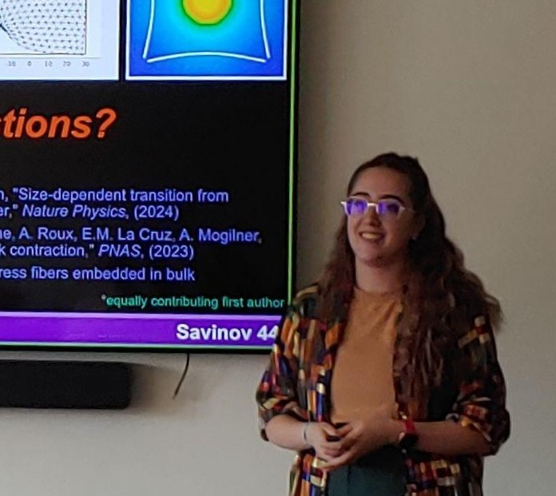
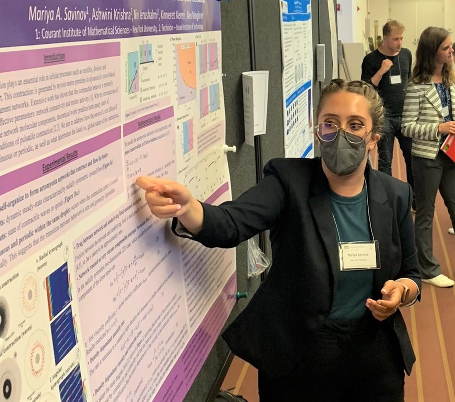

Research
overview:
My doctoral research with Alex
Mogilner focused on bringing new insights into
the mechanics and dynamics of in actomyosin
structures, with a special focus on
experimentally observed phenomena of in
vitro reconstituted networks. Together
with Prof.
Kinneret Keren’s lab we
demonstrated how changing system size can
generate varied contractile patterns in
actomyosin networks immersed in water-in-oil
droplets (Krishna et al. 2024, Nature
Physics). I have also collaborated with the Cytomorpho
Lab of Profs. Laurent Blanchoin and
Manuel Théry to reveal the critical role
of friction in patterning contraction of
actomyosin networks (Colin et al. 2023, PNAS).
In collaboration with Prof.
Charles S. Peskin, I used the Immersed
Boundary Method to demonstrate how bulk
actomyosin networks mediate long-range
interaction between stress fibers.
More recently, I also delved
into other biomechanical processes,
investigating phenomena and mechanisms
underlying directed collective cell migration in
collaboration with the Carmofon Lab
at NYU.
I am now interested in
developing new mathematical modeling
approaches to investigate the undelrying
principles of adaptive multicellular
collective dynamics, collaborating with
experimental groups to use prokaryotic and
eukaryoatic model systems as a basis for
comparative analysis.
|

defending my dissertation

presenting at SIAM LS22 |